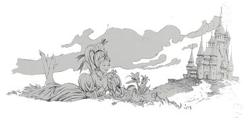
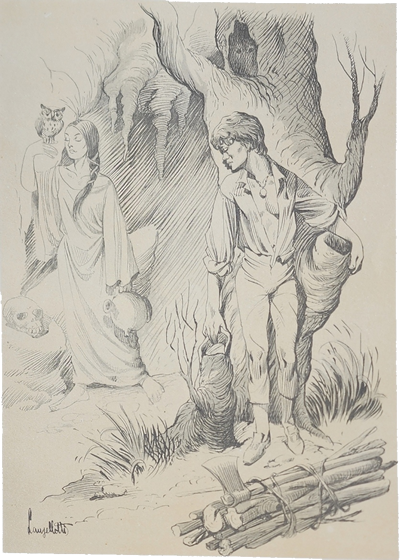
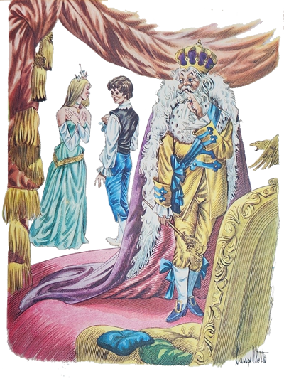
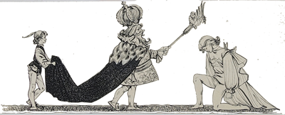

Arrelia não teve tempo de respirar e Marisa pediu-lhe que contasse outra estória. Qualquer estória servia. Mas Carlinhos queria uma que falasse de bichos. Iberê insistiu por uma estória de tesouro. Sérgio tomou o partido de Carlinhos e Jaci o de Iberê. O Arrelia não sabia a quem atender. Começou a pensar. As crianças falavam, gritavam, pediam, não o deixavam em paz.
- Puxa vida! – exclamou ele. Como é que vou fazer? Uns querem de “biuchos”, outros, de tesouro!
Propôs contar uma de bichos e mais tarde uma de tesouro. Não houve acordo entre as crianças. Queriam ouvir sua estória já. O Arrelia continuou a pensar. De repente deu um pulo e um berro: “Achei!” que fez as crianças ficarem silenciosas. Esclareceu então que se lembrara de uma estória que continha as duas coisas: O Carneiro de Ouro. “O carneiro é um bicho, não é mesmo? E o ouro está sempre ligado a tesouro. Portanto . . . E também tem a cobra . . . “ As crianças concordaram.
- Ouvi esta estória há muito tempo – começou o Arrelia – e quase nem me lembrava mais. Num lugar muito distante e selvagem, vivia ema cascavel sempre seguida por um carneiro de ouro A cobra era uma princesa que havia sido encantada por uma feiticeira. Foi assim: A feiticeira sentia uma inveja louca da princesa por ser mais bonita e mais rica do que ela. Vivia pensando em fazer-lhe algum mal. Resolveu transformá-la numa serpente. Mas para isto precisava conseguir o copo onde a princesa bebia. Depois de cheio de terra, deveria plantar um guizo de cascavel. Dele nasceria uma planta. Depois que ela nascesse, a princesa se transformaria numa cascavel. Mais tarde, as raízes, quando ficassem fortes, partiriam o copo e a princesa morreria. Para salvá-la, alguém precisaria encontrar o copo, tirar a planta sem quebrar o vidro e fazer a planta secar três dias ao Sol.
A feiticeira arranjou um emprego no castelo e conseguiu obter o copo onde a princesa bebia.
Uns dias depois, quando a princesa conversava com o rei, seu pai, este percebeu que ela estava ficando com uma cor esquisita e que sua pele se cobria de escamas. Era a transformação. De nada adiantaram todos os remédios que tomou. Transformava-se numa cascavel. Aí o rei ofereceu uma fortuna em ouro a quem desencantasse sua filha.
Quando a feiticeira soube da notícia, viu um modo de completar sua vingança e ofereceu-se para salvar a princesa. Apresentou-se ao rei e pediu para ver o ouro. Foi satisfeita. Assim que viu o monte de moedas de ouro, deu uma risada e disse ao rei:
- Pensa que pode comprar tudo com o seu dinheiro? Pois vou mostrar-lhe que não. Pode ficar com ele. Ou melhor: sua filha ficará com ele. Assim que ela se transformar completamente em cobra, ninguém quererá ficar com ela. Não terá mais um amigo. Vou transformar esse ouro num carneiro. Jamais ele sairá de perto dela para que a princesa não se esqueça que já foi rica e poderosa.
O rei implorou, prometeu mas a feiticeira estava “decidiuda”. Vendo-se desobedecido, o rei chamou os guardas. A feiticeira deu uma gargalhada e desapareceu numa nuvem de fumaça depois de haver misturado uns pós mágicos. O monte de ouro transformou-se num carneiro que correu para junto da princesa e não mais a deixou.
Dia a dia, a princesa transformava-se numa cobra, acompanhando o crescimento da planta. Ficou isolada num quarto onde ninguém queria entrar. Só o rei.

Ele fez o que pode. Gastou enormes fortunas com adivinhos, mas nada conseguiu. A princesa acabou por transformar-se completamente numa cobra, numa cascavel, e tinha por companhia somente o carneiro de ouro, pois nem mesmo o rei queria mais entrar no quarto.
A notícia do acontecimento correu o mundo. Todos falavam na princesa que se transformara em cobra. Uns tinham pena; a maioria, porém, divertia-se com a sua desgraça.
Tantas pessoas haviam-se apresentado para salvar a moça e falhado que o rei, aborrecido, mandou anunciar que todo aquele que falhasse seria enterrado vivo. Ninguém mais apareceu. A princesa-cobra continuou a viver no seu quarto juntamente com o carneiro de ouro. A única diferença entre ela e uma verdadeira cascavel era que a princesa não mordia ninguém e estava sempre chorando. Não fazia outra coisa. E ficou tão triste com sua nova condição, mas tão triste, que um dia fugiu do castelo acompanhada pelo carneiro. O rei quase morreu quando soube. Mandou procurá-la sem nenhum resultado. Ninguém mais viu os dois.
Algum tempo mais tarde, um moço lenhador que morava perto do castelo havia ido buscar lenha no mato quando ouviu alguém cantando:
”Plantei um guizo no copo,
dele uma planta brotou.
Por causa disto a princesa
numa cobra se tornou.
Quando as raízes crescerem,
o copo se quebrará,
e a poderosa princesa
num minuto morrerá.”
O moço lenhador lembrou-se do caso e procurou, com todo o cuidado, ver quem estava cantando. Seguiu em silêncio o som da voz e viu, por entre a folhagem, a feiticeira dançando e cantando à porta da gruta onde morava. Ele largou o machado e correu para o castelo a fim de dizer ao rei que sabia como salvar a princesa. O rei ouviu-o e avisou-o:
- Pode tentar salvar minha filha. Mas lembre-se: se você falhar será enterrado vivo!
O moço foi à sua casa e preparou-se para passar alguns dias na floresta, pois sabia que não ia ser fácil realizar a tarefa. Não se esqueceu de levar uma forte corda para amarrar a feiticeira e obrigá-la a confessar como salvar a princesa.
Chegou à floresta e escondeu-se o mais que pode. Pobre dele se fosse descoberto pela bruxa. Estaria perdido! Ficou ali vários dias sem que ela aparecesse. Na certa andava fazendo alguma das suas malvadezas. Já estava quase desanimado quando viu uma sombra contra a Lua. Era a feiticeira que vinha voltando montada na sua vassoura.
O moço ficou atento esperando uma oportunidade para aprisiona-la. Não era fácil, não. A “danauda” movia-se com a rapidez do raio.
Chegou porém o momento que que a paciência do moço seria recompensada. A bruxa parecia estar muito ocupada preparando alguma feitiçaria. Tinha posto um grande caldeirão a ferver e mexia, mexia o que estava dentro, completamente distraída. Ele chegou por detrás, devagarinho, e passou-lhe a corda o mais depressa que pode. A feiticeira, apanhada de surpresa, não teve tempo de reagir. Depois de bem amarrada, o moço tratou de obrigá-la a falar. Passou a noite inteira fazendo-lhe perguntas. Ela não respondeu uma palavra. Quando começou a amanhecer, ele notou que a bruxa estava ficando impaciente. Lembrou-se então que bruxas não gostam da luz do dia. Teve uma ideia: levou-a para uma clareira onde o Sol batesse em cheio.
O Sol foi esquentando, esquentando, e a feiticeira começou a suar em bica. Mas não se dava por vencida.
- Que forte era a bruxa, não? – disse Carlinhos. Por que ele não acendia uma fogueira debaixo dela?
- Assim também não! – respondeu o Arrelia. Ele não era tão ruim! Queria apenas que ela “esquentausse”; não que se “queimausse”.

- Pois eu – disse Iberê – poria fogo nela com todo o gosto. Esse negócio de bruxa . . .
Cada criança começou a dar sua opinião: queima, afoga, põe em cima de um formigueiro. Só Marisa teve pena da feiticeira: “Ela não tem culpa de ser bruxa, tem?”
Depois de todas haverem exposto o seu ponto de vista, o Arrelia pode falar novamente:
- Se algum de vocês estivesse no lugar dele, eu queria ver se era capaz de fazer alguma coisa! Bastava ver a bruxa para sumir: zum!
A bruxa tanto suou que não aguentou mais:
- Água! Por favor, água!
O moço logo formou um plano:
- Está certo. Vou dar-lhe água. Só que não sei onde tem.
A bruxa ensinou-lhe o lugar. Ele deu alguns passos e voltou:
- E onde vou trazê-la? Preciso de um copo.

Louca de sede como estava, a bruxa contou-lhe onde estava escondido o copo com o guizo de cascavel. Ele, que já sabia da estória, ficou contente. Encontrou-o, tirou a planta e foi buscar a água. Voltou e colocou-o, cheio de água fresquinha que dava gosto, perto da feiticeira. Ela pediu-lhe, implorou-lhe que lhe desse a água.
- Só se você mostrar como desencantarei a princesa.
Ela não teve outro jeito e contou-lhe que a planta precisava ficar três dias ao Sol. Ele colocou a planta ao Sol e deu a água à feiticeira, dizendo-lhe:
- Você ficará amarrada até que eu encontre a princesa.
- Ande pela floresta e procure ouvir um guizo de cascavel. Depois veja se a cobra está acompanhada por um carneiro de ouro. Se estiver, é a princesa. Traga-os para cá. No terceiro dia em que a planta estiver ao Sol, o encantamento se quebrará.
Ele partiu e ficou atento para ouvir algum guizo de cascavel. Ouviu muitos e encontrou muitas cobras, mas nenhuma acompanhada por um carneiro de ouro. Encontrou-os finalmente num lugar muito “escondiudo”. Contou o que havia acontecido e a cobra, que até então estivera chorando, cessou de chorar. O carneiro dava pulos de alegria, brilhando à luz do Sol. Os três seguiram para a clareira onde estava a bruxa e lá esperaram os três dias. No terceiro dia a planta secou. A cascavel começou a transformar-se lentamente na formosa princesa e logo a moça voltou a ser completamente o que era.
- E o carneiro de ouro? – perguntou Jaci. Também perdeu o encantamento?
- Também – explicou o Arrelia. Quando a cobra voltou a ser a princesa. O carneiro transformou-se num monte de moedas de ouro.
A bruxa pediu então que o moço a desamarrasse. Ele concordou e desamarrou-a. Antes, porém, guardou o copo.

- Que bobo! – gritou Sérgio. E ela não enfeitiçou os dois?
- Não, não os enfeitiçou porque era de dia e as bruxas só agem à noite. Até que anoitecesse eles estariam no castelo.
A princesa ficou tão grata ao seu salvador que queria dar-lhe todo aquele ouro. Ele não concordou:
- Vim salvá-la unicamente com o interesse de vê-la feliz. Não quero nenhuma recompensa pois já estou mais do que recompensado.
Ele pôs todo o ouro num saco e partiu para o castelo, acompanhado da princesa. Quando começaram a andar, ouviram fortes pancadas que vinham de dentro da gruta onde morava a feiticeira. Era ela que estava batendo com a cabeça na parede de tanta raiva por ver quebrado o seu feitiço.
Chegaram ao castelo e a princesa contou ao seu pai o que acontecera. O rei não sabia o que fazer de tanto contentamento que sentia. A princesa contou-lhe que o moço recusara todo aquele ouro, e o pai, ficando mais contente ainda, abraçou o herói e disse-lhe bem alto para que todos ouvissem:
- Você é a pessoa mais digna que já conheci. Há bem poucos que praticam uma boa ação sem o interesse de uma recompensa. Sou obrigado a demonstrar-lhe o meu reconhecimento senão jamais terei sossego. Diga-me qual é o seu maior desejo e ele será cumprido.

Novamente ele declarou que não queria paga nenhuma. De nada adiantaram as palavras do rei e o rapaz aprontou-se para deixar o castelo. Quando se despediu da princesa, o rei notou que ele estava muito triste e sua filha também. Como era um homem inteligente, logo percebeu a causa. Os dois estavam-se gostando.
- Se vocês se gostam – disse o rei – não tenham receio de me falar. Serei compreensivo. Apesar desse jovem não ter sangue real, a ele devo a volta de minha filha. Depois, ele tem mais nobreza do que muitos príncipes que conheço.
Os dois disseram que sim e o rei deu consentimento para que se casassem. Houve uma festa muito “boniuta” que durou vários dias. O moço tornou-se um garboso príncipe. Mas não esqueceu o trabalho com o qual havia vivido: saía toda a manhã e ia cortar lenha na floresta. Isto nem o rei nem a princesa conseguiram convencê-lo de deixar de fazer.